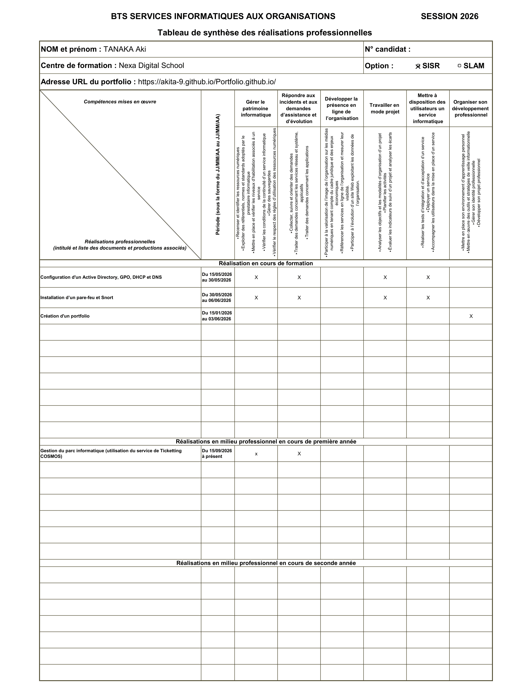

Modernisation et Centralisation d'une Infrastructure Réseau
Mise en place d'un domaine Active Directory sous Windows Server 2022. Création d'UO, de comptes utilisateurs et de stratégies de groupe (GPO) . . .
Étudiante en BTS SIO – Option SISR · Réseaux & Systèmes
J'ai un fort intérêt pour l'infrastructure, la cybersécurité et l'administration système.
Curieuse, rigoureuse et avec un grand intérêt pour les infrastructures IT, j'ai choisi de me reconvertir dans l'informatique pour en faire mon métier.
Je m'appelle Aki TANAKA, étudiante en première année de BTS SIO option SISR à l'école NEXA - Digital School. Anciennement salariée dans le secteur de la restauration/hôtellerie, pendant 8 ans, j'ai décidé de faire une reconversion vers le monde de l'informatique, guidée par mon intérêt pour les réseaux et la cybersécurité. J'ai choisi l'alternance pour acquérir une expérience professionnelle concrète dès le début de ma formation.
Depuis septembre 2025, je suis alternante au sein de RTE — Réseau de Transport d'Électricité, auprès de mon tuteur et de mes collègues, toujours prêts à m'aider.
Diplôme d'État de niveau Bac+2, le BTS SIO forme les futurs professionnels de l'informatique. Il s'appuie sur un socle commun solide — mathématiques pour l'informatique, droit, économie — et fait de la cybersécurité un fil conducteur incontournable.
Deux spécialisations sont proposées à partir du second semestre :
J'effectue mon apprentissage au sein de RTE (Réseau de Transport d'Électricité), opérateur d'importance vitale (OIV) chargé de gérer le réseau public de transport d'électricité haute et très haute tension en France. La robustesse et la sécurité de ses infrastructures y sont absolument critiques.
J'occupe le poste d'Appui ARSI (Appui à l'Animation Régionale du SI et de sa Sécurité).
Travaux réalisés en cours et en entreprise
Mise en place d'un domaine Active Directory sous Windows Server 2022. Création d'UO, de comptes utilisateurs et de stratégies de groupe (GPO) . . .
Installation et configuration d’un pare-feu. Configuration d'un serveur pfsense. . .
Prochain projet à venir…
| Catégorie | Compétence / Technologie | Niveau | Outils / Détails |
|---|---|---|---|
| Réseaux | Protocoles TCP/IP |
|
OSI, IPv4/IPv6, DHCP, DNS |
| Administration réseau |
|
Cisco Packet Tracer, VLAN, routage statique | |
| Pare-feu & sécurité réseau |
|
pfSense, ACL, iptables | |
| Supervision |
|
Zabbix, Nagios | |
| Systèmes | Linux |
|
Debian, Ubuntu Server, Bash |
| Windows Server |
|
AD, GPO, Windows Server 2022 | |
| Virtualisation |
|
VirtualBox, VMware, Proxmox | |
| Sécurité | Cybersécurité défensive |
|
Wireshark, SIEM, antivirus |
| Gestion des accès |
|
LDAP, SSO, MFA | |
| Développement | Scripting |
|
Bash, PowerShell, Python (bases) |
| Web |
|
HTML, CSS, bases PHP |

Je me tiens informée des évolutions du secteur IT
Une question, une opportunité ? N'hésitez pas à m'écrire !